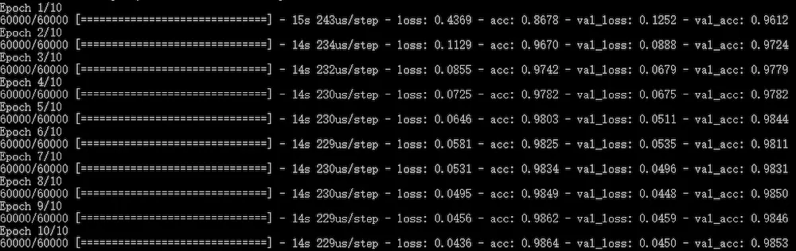
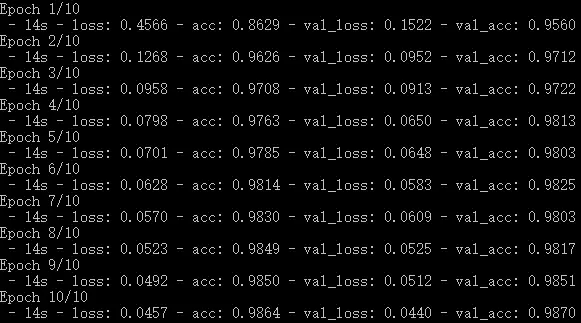
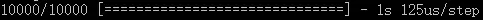

网络层函数
1.relu
relu函数将所有的负值进行归零
2.sigmoid
概率函数，将人与i之压缩到[0，1]区间中，输出值可以看成概率值
API函数
1.network.summary()
输出网络的结构
2.verbose()
（1）fit 中的 verbose
verbose：日志显示
verbose = 0 为不在标准输出流输出日志信息
verbose = 1 为输出进度条记录
verbose = 2 为每个epoch输出一行记录
注意： 默认为 1
verbose = 1：

verbose = 2：

（2）evaluate 中的 verbose
verbose：日志显示
verbose = 0 为不在标准输出流输出日志信息
verbose = 1 为输出进度条记录
注意： 只能取 0 和 1；默认为 1
verbose = 1：
